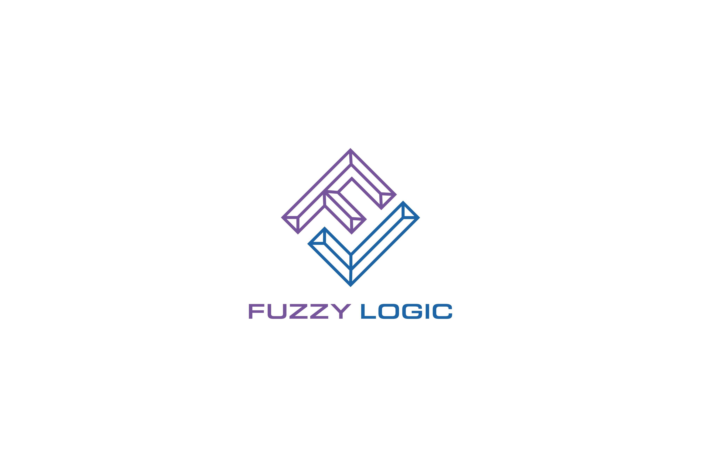

Andrew Derbak's Resume

Summary
I am a software engineer looking to grow my skills with a world class company.
Education
Webster University
- Graduated with 3.4 GPA
- Major: Business Administration
- Minor: Audio Production
St Charles Community College
- Graduated with 3.7 GPA
- Associate's Degree: Music
Work Experience
Mastercard
- Senior Software Engineer
- Responsible for maintaining Simulators
- Created automations that saved over 10,000 hours
- Answer over 100 support tickets in my first year
- Manager, Data Engineering
- Created data pipelines to support HR business function
- Saved over 30,000 labor hours with automations
- Maintained 99% availability of data platform
Skills
Awards & Certifications
- Alteryx User Group Leader (2015-2022)
- Various Coursera Certificates
Contact Me
My Hobbies